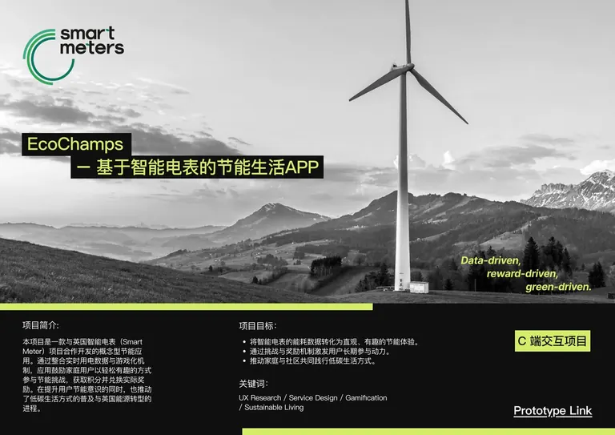

EcoChamps / 节能生活应用
把能耗数据，转化为每天愿意做的小行动
看到用电量，不等于知道下一步怎么做。EcoChamps 是一个基于智能电表数据的概念应用，尝试把抽象数字转化为可理解的目标、反馈和日常行动。

需要解决什么问题
用户不容易把能耗信息转化为具体行为，也容易在缺少反馈和动力时放弃长期目标。方案需要在有限的注意力里，连接理解、行动与持续参与。
项目参与
项目工作涵盖用户洞察、用户画像、服务与功能流程、游戏化机制、视觉规范和交互原型，重点探索数据如何进入家庭用户的日常任务。
关键决策与取舍
- 01
把数据和行动放在一起
以个性化仪表盘组织能耗、提醒和挑战进度，让用户在看见信息时，也能理解可采取的下一步。
- 02
让长期目标变成小挑战
把目标拆成每日与每周任务，用进度、积分和奖励方案表达反馈，探索家庭成员共同参与的动力。
- 03
优先核心任务，收拢范围
原型迭代中后置非核心个人简介模块，优先优化挑战反馈、排名互动和好友进度入口。
产出与验证到哪里
形成用户洞察、功能架构、故事版、设计系统和高保真页面，并记录原型迭代方向。
概念应用与原型设计；电表实时接入、奖励兑换及节能效果不作为已实现能力。原稿中的任务数值为情境示意。
把作品展开来看
带到下一个项目的思考
硬件产生的数据，只有进入用户能够理解和执行的任务，才可能变得有价值。激励机制也应服务核心行为。
继续看看